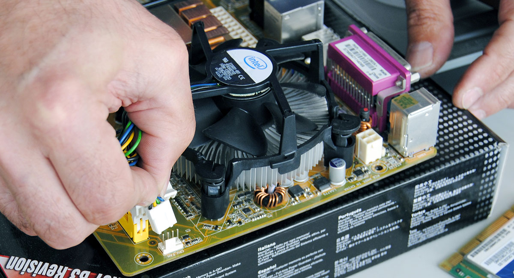

il dissipatore va appoggiato sopra al processore in modo che le quattro viti ai lati siano allineate con i quattro buchi appositi, assicurandosi anche che sia girato in modo che il cavo sia vicino al punto in cui va inserito.
il dissipatore va appoggiato sopra al processore in modo che i quattro agganci ai lati siano allineati con i quattro buchi appositi, assicurandosi anche che sia girato in modo che il cavo sia vicino al punto in cui va inserito. Dopodiché, spingere con abbastanza forza, ovviamente stando attenti a non fare danni, i quattro agganci finché non si sono incastrati correttamente. Infine collegare il dissipatore con il cavo ai pin di alimentazione.